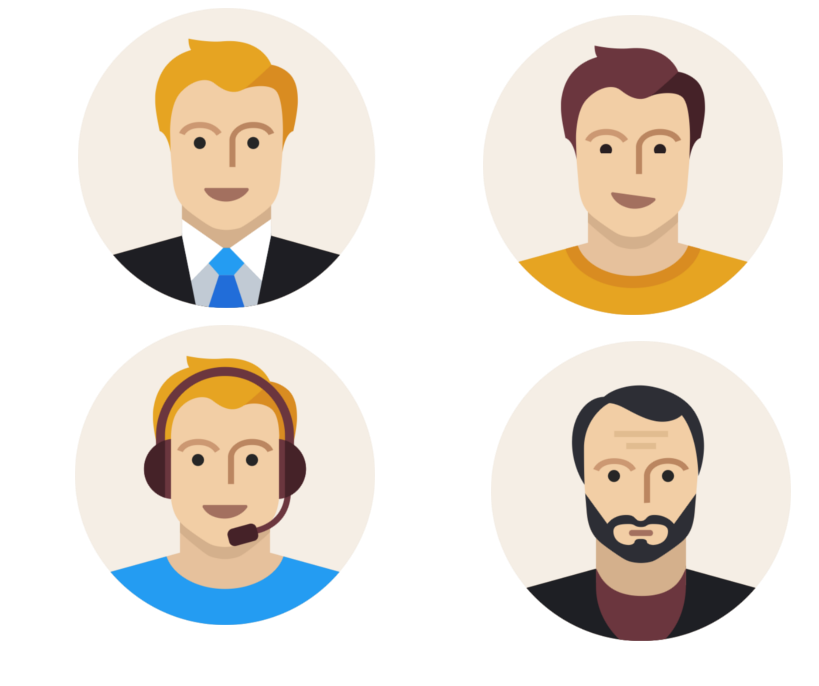

Tempus Artis TIC
¡Momento para aprender sin importar el espacio y el tiempo!
Formación
¡Promoviendo la educación en el área tecnológica!
De manera pertinente, expresa el sentido práctico de activar e insertar en cada uno de los elementos funcionales, la adscripción del aprendizaje significativo: el estudiante como protagonista de su propio aprendizaje y el docente dispuesto a realizarse como emprendedor en la originalidad en la alfabetización del siglo XXI expresado en nuevos insumos académicos, la multimedialidad, la información científica, la inteligencia emocional, la hipermedia…
Atenderá la demanda del conocimiento en una perspectiva holística del entramado social y los canales de servicio promovidos por la Web 2.0
- Apertura de un aprendizaje Diferenciado: cursos, talleres, foros, presenciales y a distancia.
- Apertura de un aprendizaje Personalizado: ¿Qué necesitas APRENDER?
- Apertura de un aprendizaje Adaptativo: Análisis de Datos.
Diseño WEB
Basados en Responsive web design
Nos adaptamos a tus necesidades para el desarrollo de tu página web personalizada, Y contaras con asesoría de expertos en el área de las TIC. Planificamos, diseñamos, implementamos y le damos mantenimiento a los sitios web. No es simplemente la implementación del diseño convencional ya que abarcan diferentes aspectos como el diseño gráfico web, diseño de interfaz y experiencia de usuario, como la navegabilidad, interactividad, usabilidad, arquitectura de la información; interacción de medios, entre los que podemos mencionar audio, texto, imagen, enlaces, video y la optimización de motores de búsqueda.
Informática Educativa
Pienso, luego existo
"TEMPUS ARTIS TIC de manera pertinente, expresa el sentido práctico de activar e insertar en cada uno de los elementos funcionales, la adscripción del aprendizaje significativo: el estudiante como protagonista de su propio aprendizaje y el docente dispuesto a realizarse como emprendedor en la originalidad en la alfabetización del siglo XXI expresado en nuevos insumos académicos, la multimedialidad, la información científica, la inteligencia emocional, la hipermedia…
Hosting
Somos tu mejor opción
Te ofrecemos los mejores precios del mercado, Diseñamos tu página web y nos encargamos del resto.
Nosotros unicamente te entregamos el URL de tu Web y listo, si lo deseas también nos encargamos de su mantenimiento por todo un año.
Desarrollo
TEMPUS ARTIS TIC expresa un nuevo lenguaje basado en una visión diferente de la realidad. El deseo de novedad, innovación y experimentación se promueve a través de la significación de la cultura digital. Ubicamos la Cultura Digital en el concepto de Sociedad de la Información enfatizando que éste es un encuentro interdisciplinario del impacto de las tecnologías con la sociedad. Hay una necesidad fundamental en descifrar la educación cimentada en tecnología, esto requiere algo más que un contacto en la Red. Necesario es entender que la educación del siglo XXI, vista como escuela del futuro, estudie las nuevas condiciones pedagógicas. La apertura hacia una nueva construcción del aprendizaje mediado por el espacio telemático insinúa un conocimiento sobre los medios de información y comunicación que exteriorice la interacción estimulando las emociones y los sentimientos.
Misión
Manifestación tácita o implícita de aprender, conocer, informarse… intercambio de conocimiento e información considerables con empresas, instituciones, personas… pertenecer a la sociedad red, buscar, navegar, sentir interés y revelarse con las TIC haciéndonos participantes y conocedores.
Visión
Aplicación de los diferentes instrumentos que nos ofrece la Web para desarrollar la creatividad en el perfil profesional de la comunicación en una política que refuerce las competencias basadas en los medios sociales digitales (Sistema de Gestión); además de establecer la comunicación entre personas con diferentes intereses y motivaciones que utilizan el internet como medio para poder compartir información a través de plataformas digitales..
Nuestros trabajos
Aquí colocaremos nuestros trabajos realizados con las empresas.
La gente de petroleoquímica, y no podemos olvidar que la pagina debe llevar sponsor
Nuestro Equipo
Todos profesionales en el área de las TIC
Necesitamos colocar un breve perfil de cada uno de nosotros y colar fotos presentables para sustituir los avatares.
